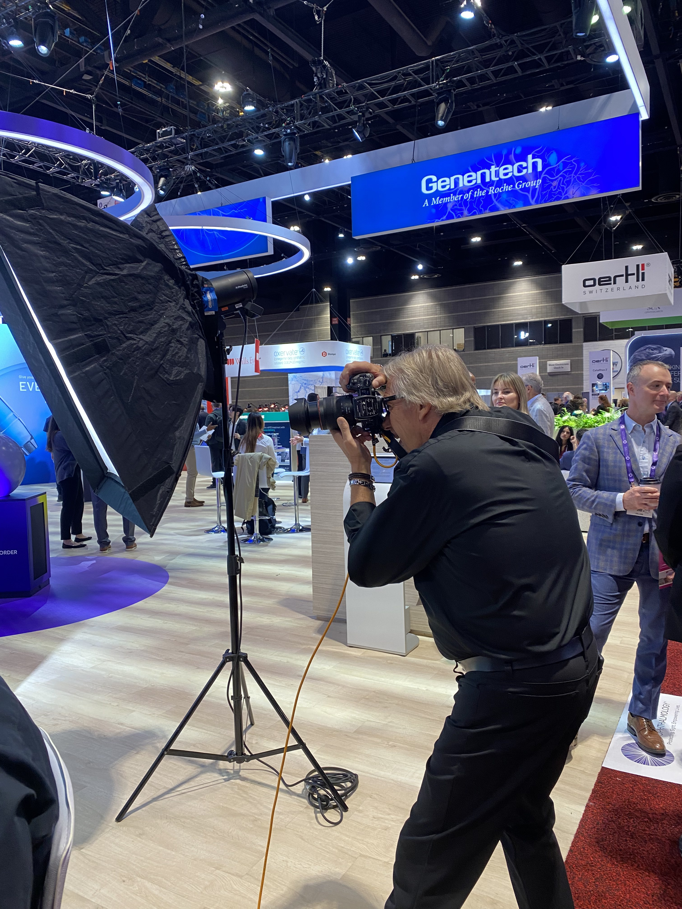
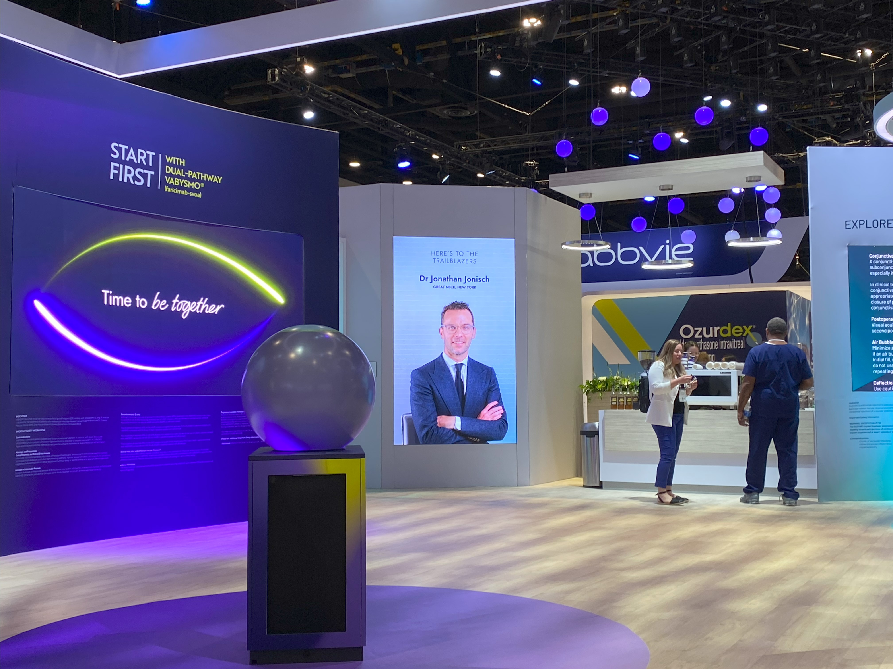

02 / Portfolio
Interactive Photobooth
Trade Show Experience
Realtime Photobooth Gallery System
Live photographer to LED wall photobooth system
System design and development for a stand at the AAO exhibition in Chicago. A live photography booth would take peoples photos which were then ingested into the system and merged with data from their release form, then displayed on a large LED wall in rotation with other users and brand content. System included web development for Image release website application, and image verification website both talking to a Touchdesigner system that merged all the data and handled the gallery application.

